About
I'm an aspiring full-stack web developer with a background in life sciences research and a passion for solving complex problems through technology. I hold an M.Sc. in Molecular Genetics from the University of Toronto and a B.Sc. (Hons.) in Genetics from the University of Manitoba. Throughout my research career, I've worked across several fields, including immunology, cancer biomarker research, epigenetics, drug testing and vaccine development. My extensive experience in the life sciences has strengthened my analytical and problem-solving abilities, as well as my skills in data management.
Motivated by an interest in technology and creating interactive, data-driven applications, I pursued formal training in full-stack web development through the intensive Coding Boot Camp at the University of Toronto School of Continuing Studies. Through this training, independent projects and tutoring experience, I've gained practical skills in HTML, CSS, JavaScript, React, Node.js, Express, SQL and MongoDB. I've also built applications incorporating responsive design, APIs, databases and server-side technologies.
I bring together scientific analytical thinking, attention to detail and hands-on software development experience. I'm now looking to begin my professional career in web development, where I can combine these strengths to build useful, accessible and engaging web applications.
Projects
This section showcases my web development projects, highlighting the skills and technologies I've applied through independent work and hands-on practice. Each project is available on GitHub for further exploration.
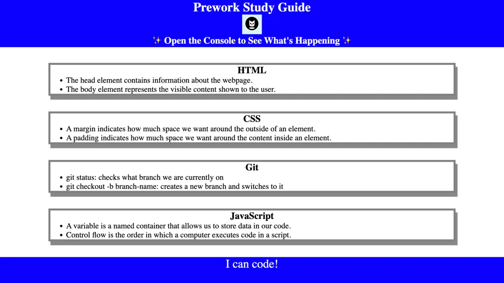
Prework Study Guide
A study guide webpage created for boot camp students going through the prework, containing notes on HTML, CSS, Git and JavaScript.
View on GitHub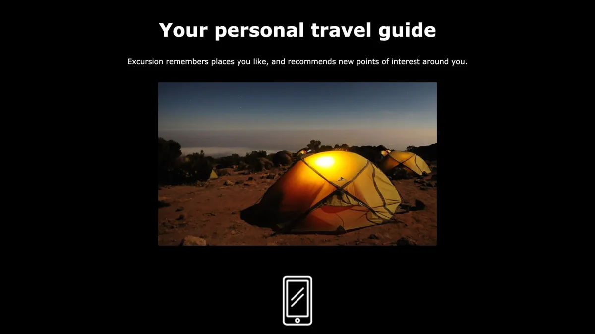
Excursion
A responsive landing page for a mobile app that helps users record and share their experiences, featuring an embedded promotional video and landscape imagery. Built with HTML5 and CSS3 and deployed with GitHub Pages as part of the Codecademy Learn Git & GitHub course.
View on GitHubCode Refactor
A refactor of the HTML and CSS for Horiseon Social Solution Services, Inc. The updated code uses semantic HTML elements, a logical structure independent of styling, accessible alt attributes on images, sequential heading order and a concise, descriptive title.
View on GitHub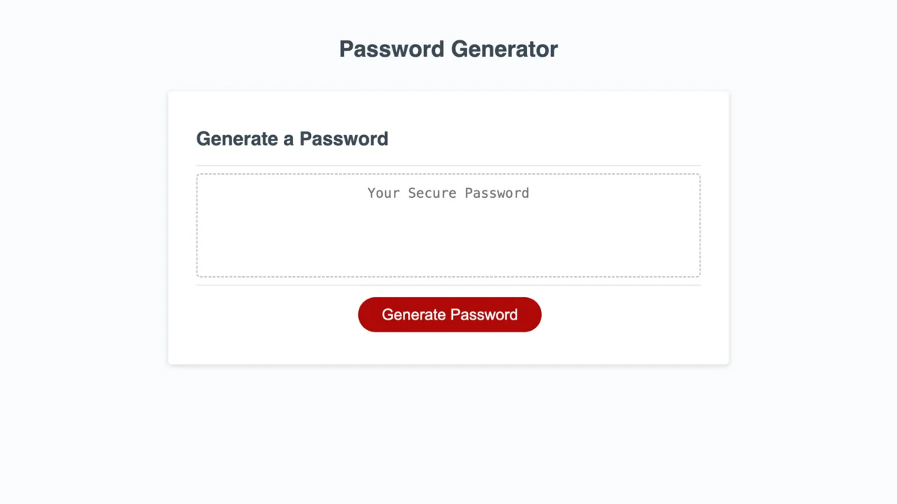
Password Generator
An application that generates a random password based on the selected criteria: a length between 8 and 128 characters, and any combination of lowercase, uppercase, numeric and special characters. Built with JavaScript.
View on GitHub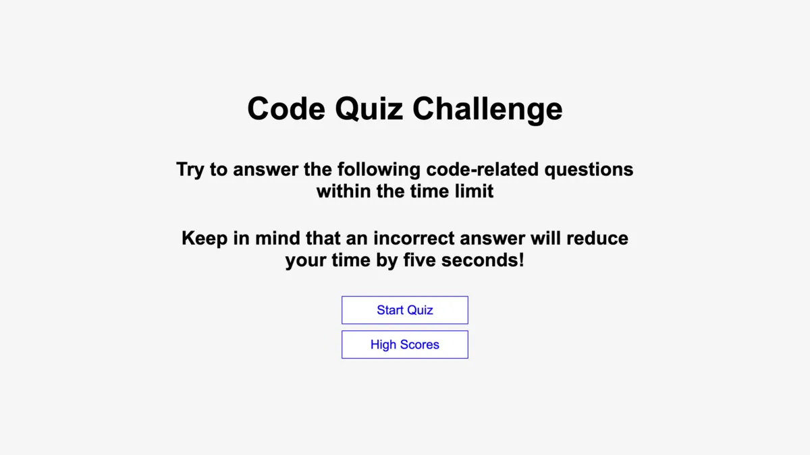
Code Quiz
A timed coding quiz with multiple-choice questions. Players answer before the timer runs out and enter their initials at the end to save a high score. Runs in the browser with dynamically updated HTML and CSS powered by JavaScript.
View on GitHub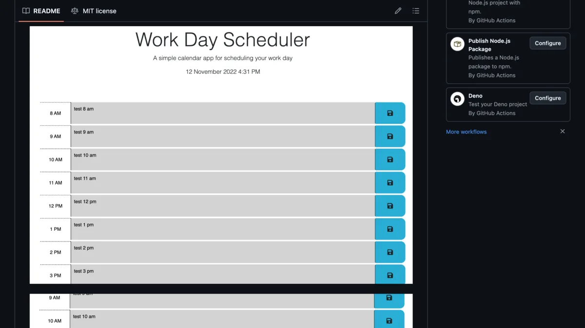
Work Day Scheduler
A simple calendar application for saving tasks for each hour of a standard work day. Time blocks are color coded as grey, red and green for past, present and future. Runs in the browser with dynamically updated HTML and CSS powered by jQuery.
View on GitHub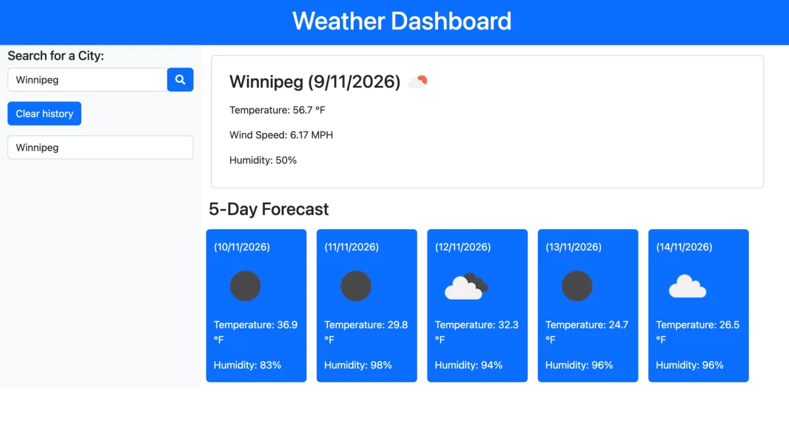
Weather Dashboard
A weather dashboard that shows the weather outlook for multiple cities. Users search for a city, build a search history list and click a past search to reload that city's weather. Runs in the browser with dynamically updated HTML and CSS powered by jQuery and a server-side weather API.
View on GitHub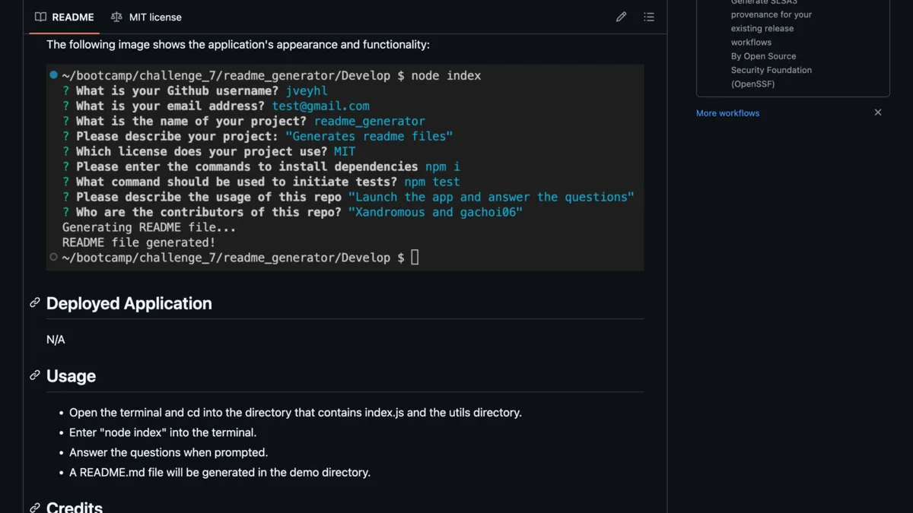
README Generator
A command-line application that dynamically generates a professional README.md file from the user's answers to prompts, using Node.js and the Inquirer package.
View on GitHub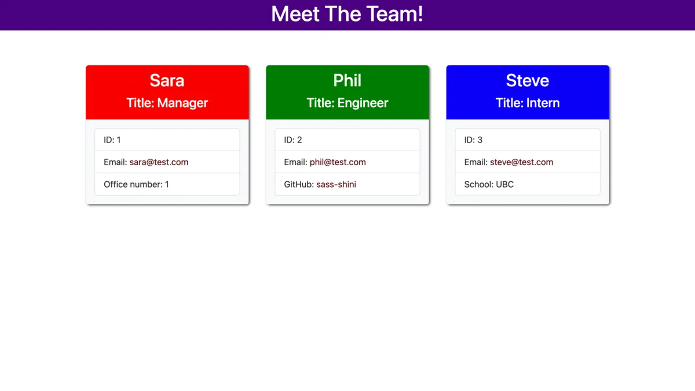
Team Profile Generator
A command-line application that takes in information about employees on a software engineering team and generates an HTML webpage displaying a summary for each person. Built using object-oriented programming in Node.js.
View on GitHub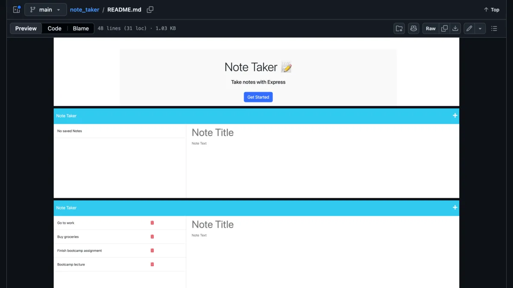
Note Taker
An application for writing, saving and deleting notes. It uses an Express.js back end that saves, retrieves and deletes note data from a JSON file.
View on GitHub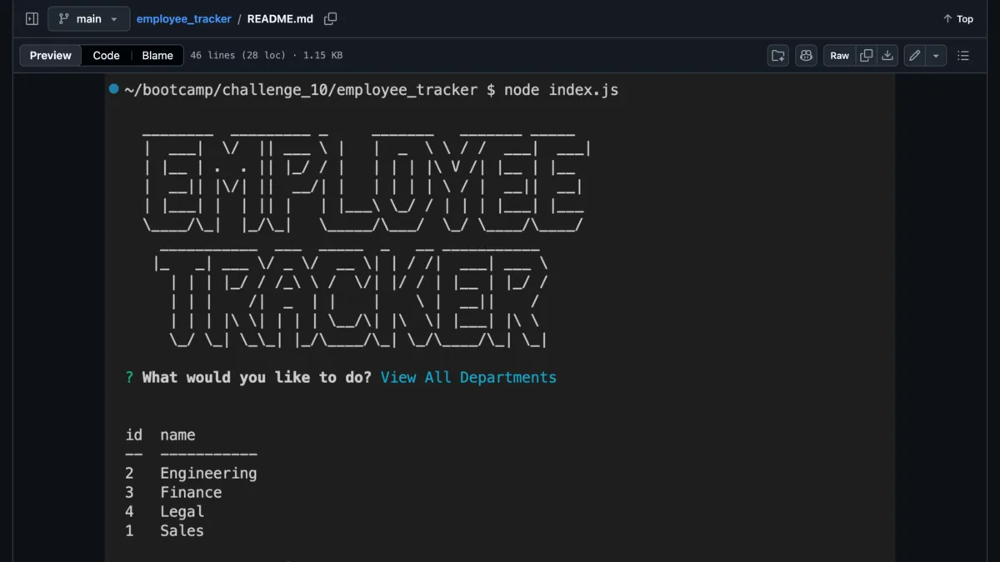
Employee Tracker
A command-line application for managing a company's employee database, built with Node.js, Inquirer and MySQL2. Users can view all departments, roles and employees, add a department, role or employee, and update an employee's role.
View on GitHub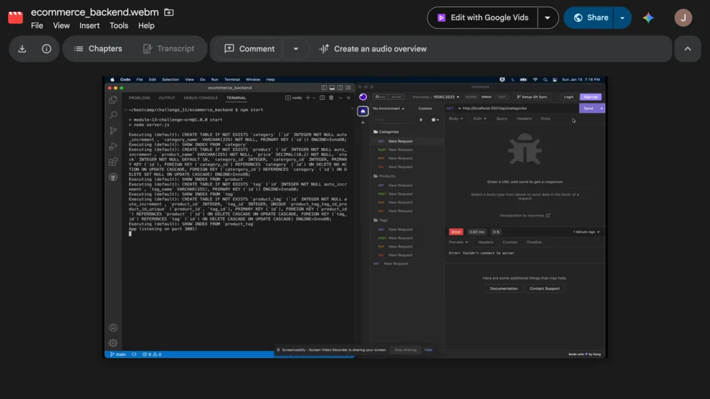
E-commerce Back End
An e-commerce back end added to a working Express.js API and configured to use Sequelize. It connects to a MySQL database and has functioning CRUD routes, tested with Insomnia.
View on GitHub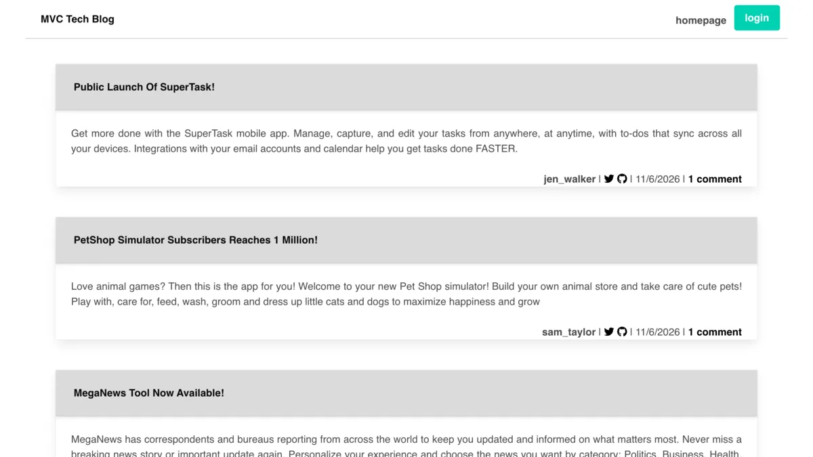
Tech Blog
A CMS-style blog site where developers can publish posts and comment on other developers' posts. Built with the MVC pattern using Handlebars.js for templating, Sequelize as the ORM and express-session for authentication.
View on GitHub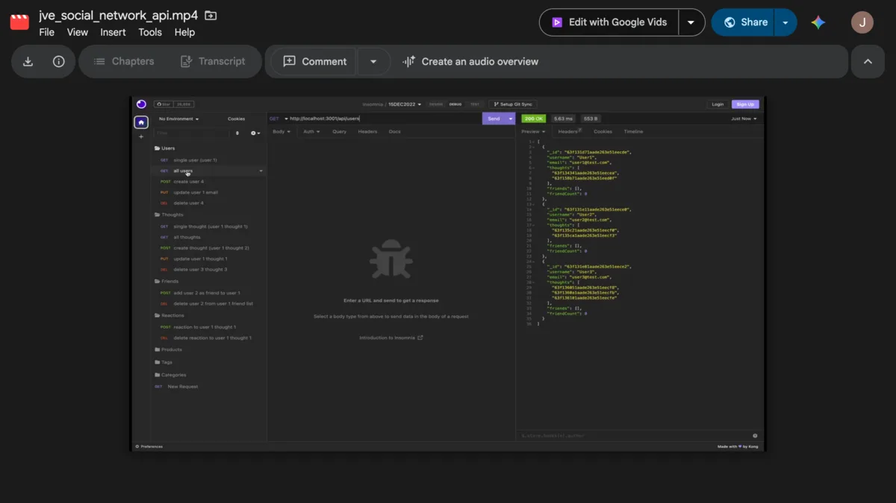
Social Network API
An API for a social network web application where users can share their thoughts, react to friends' thoughts and create a friend list. Built with Express.js for routing, a MongoDB database and the Mongoose ODM.
View on GitHub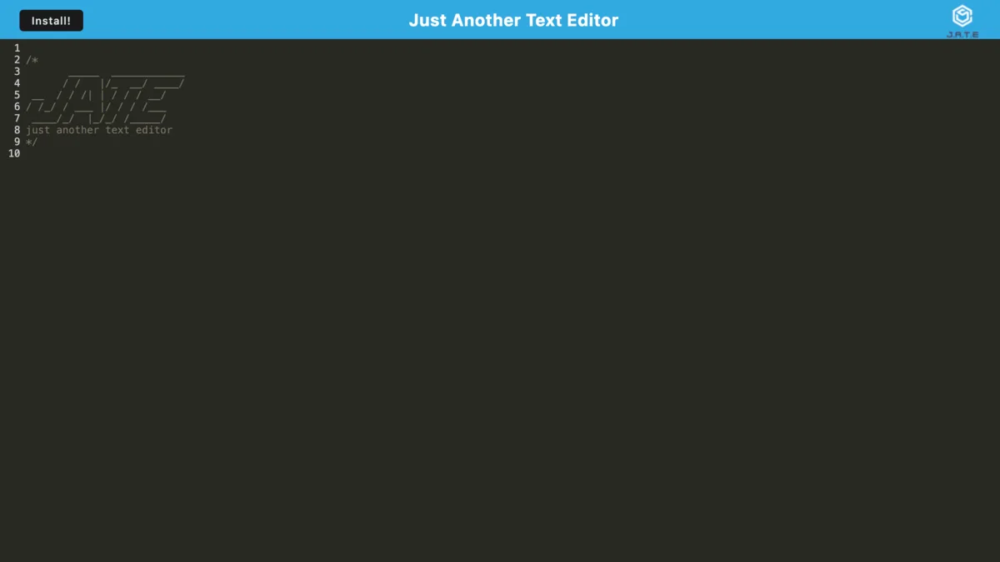
Text Editor
A simple text editor with JavaScript syntax highlighting. It is a progressive web application (PWA), so it can be installed and used offline. Bundled with webpack and uses Babel for modern JavaScript in the browser.
View on GitHub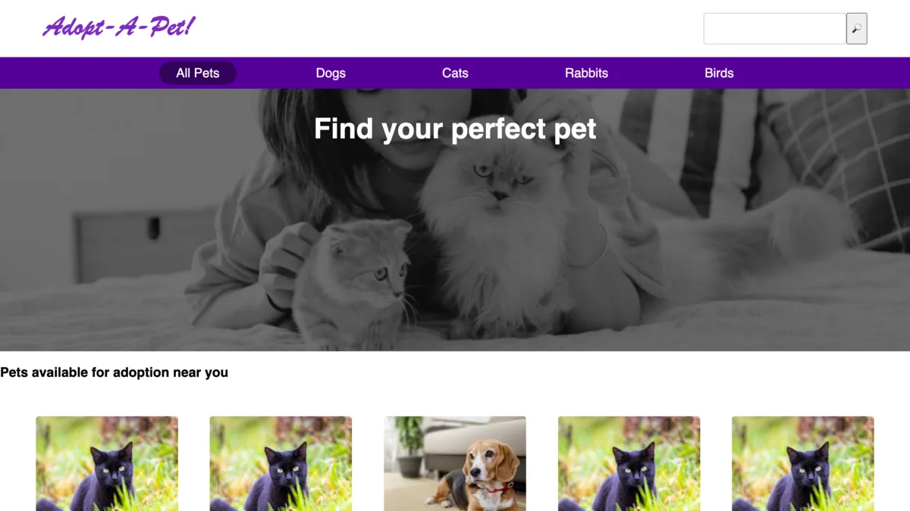
Pet Adoption App
A React app for browsing adoptable pets by animal type, searching by name or state, and viewing individual pet detail pages. Built with React Router, Vite, CSS Modules and Mock Service Worker for mocked API data. Based on a Codecademy project.
View on GitHubResume
Profile
Prospective web developer with full-stack training and a strong background in life sciences research. Skilled in HTML, CSS, JavaScript, React, Node.js, Express, SQL and MongoDB, with experience building responsive web applications and working with APIs and databases. My background in genetics and laboratory research brings strong analytical, problem-solving and data-management skills, along with a detail-oriented approach to troubleshooting complex challenges. I offer a distinctive combination of scientific experience and software development skills.
Work Experience
Private Tutor
University of Manitoba
2026 – Present
Provide tutoring in web development, with a focus on JavaScript, CSS and HTML.
Analyst II
AltaSciences, Laval, QC
2025 – 2026
Worked in the Ligand-Binding Assay (LBA) department, performing anti-drug antibody research and MSD/ELISA assays, and supporting liquid handler research and development.
- Performed assay work from sample preparation through data generation and analysis.
- Evaluated automated liquid handling for standard curve and quality control sample preparation, comparing automated and manual methods and assessing reproducibility.
- Followed SOPs and maintained accurate documentation in accordance with GLP and applicable GCP requirements.
Research Associate
CellCarta, Montréal, QC
2022 – 2024
Worked on immunology research as a member of the MSD/ELISA team, performing mesoscale discovery (MSD) and enzyme-linked immunosorbent assay (ELISA) experiments and analysing experimental data.
Laboratory Technician
CellCarta, Montréal, QC
2021 – 2022
Worked on the Intracellular Staining team, preparing cell samples for flow cytometry through cell thawing and related laboratory procedures.
Private Tutor
University of Toronto and University of Manitoba
2017 – 2020
Provided tutoring in web development (JavaScript, CSS and HTML), Python, Java, Processing and introductory statistics.
Laboratory Technician
University of Toronto Structural Genomics Consortium (SGC)
March – December 2016
Contributed to research investigating epigenetic pathways involved in glioblastoma using patient-derived cancer stem cells.
- Treated cancer stem cells with small-molecule probes targeting epigenetic proteins.
- Performed western blotting on cancer stem cell lysates.
- Collected and analysed live-cell imaging data using fluorescent probes and the IncuCyte ZOOM platform.
Laboratory Technician
Alex and Simona Shnaider Laboratory in Molecular Oncology, Mount Sinai Hospital, Toronto, ON
2013 – 2015
Contributed to cancer biomarker research focused on thyroid and head and neck cancers.
- Performed immunohistochemical analysis of archived tissue sections.
- Used brightfield microscopy to assess benign, dysplastic and cancerous human tissue samples.
- Conducted digital pathology image analysis using the Visiopharm Integrator System.
M.Sc. Student, Department of Molecular Genetics
University of Toronto, Toronto, ON
2010 – 2013
Conducted research on cell migration and axon guidance using the nematode Caenorhabditis elegans, under the supervision of Dr. Joe Culotti.
- Characterized anatomical and genetic features of mutant animals using microscopy.
- Performed gene mapping using single-nucleotide polymorphisms (SNPs), DNA extraction and sequence analysis.
- Designed primers, performed restriction enzyme digests, generated new worm strains and maintained worm stocks.
Laboratory Technician
National Microbiology Laboratory, Public Health Agency of Canada, Winnipeg, MB
May – December 2008
Supported prion disease research under the supervision of Dr. David Knox.
- Designed primers to identify mutations in transgenic mice and performed DNA extraction from mouse tissue.
- Worked with eukaryotic cell lines, including GP2-293, NIH-3T3 and SK-N-FI.
- Performed cDNA cloning, protein extraction and gel electrophoresis.
Honours Student, Department of Microbiology
University of Manitoba
2007 – 2008
Conducted biocontrol research under the supervision of Dr. Teresa de Kievet.
- Studied the biocontrol mechanisms of the bacteria Pseudomonas chlororaphis, focusing on gene regulation and antibiotic production for controlling the fungal pathogen Sclerotinia sclerotiorum.
- Genetic modification of P. chlororaphis using conjugation and electroporation.
- Gene expression analysis using β-galactosidase assays.
Laboratory Technician
National Microbiology Laboratory, Public Health Agency of Canada, Winnipeg, MB
May – August 2007
Worked in Dr. Michael Mulvey's laboratory on antimicrobial resistance and nosocomial infection research, comparing spa typing and pulsed-field gel electrophoresis (PFGE) for methicillin-resistant Staphylococcus aureus (MRSA).
- Performed DNA extraction, purification and polymerase chain reaction (PCR).
- Analysed DNA sequence data and evaluated sequence-based typing methods.
Education
University of Toronto School of Continuing Studies - Toronto, ON
Full Stack Web Development Coding Boot Camp, 2022 – 2023
University of Toronto - Toronto, ON
Master of Science (M.Sc.) in Molecular Genetics, 2010 – 2013
Graduate research focused on cell migration and axon guidance using the nematode Caenorhabditis elegans.
University of Manitoba - Winnipeg, MB
Bachelor of Science (B.Sc.), Honours, Major in Genetics, 2004 – 2009
Five-year Co-operative Education option.